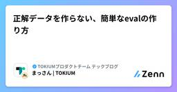

TOKIUMプロダクトチーム テックブログのフィード
https://zenn.dev/p/tokium_dev
『未来へつながる時を生む』 株式会社TOKIUMの技術ブログです🕰
フィード

AIエージェントの失敗を228件記録したら、根本原因は3つしかなかった
TOKIUMプロダクトチーム テックブログのフィード
!この記事は何の話か（3 行まとめ）AI（Claude Code）が失敗するたびに教訓を1ファイル1パターンで記録する運用を数ヶ月続けたら228件たまったので、全件を分類集計しました教訓の大半は「Yする前にXせよ」「XはYではない」の2つの構文に収束しており、規律系の失敗の根本原因は3つ（代理シグナルの過信・否定の早撃ち・浦島太郎現象）しかありませんでしたdb:prepare が exit 0 なのに作成テーブル0件、復元不能バックアップ、敵対検証エージェントの指摘が全部偽陽性、といった実例と、再発防止策（行動ルール→Hookによる機械強制→本番経路の定期実走）をどう積んでい...
1日前

あなたのClaude Codeは直列ですか？うちは並列です。
TOKIUMプロダクトチーム テックブログのフィード
!この記事は何の話か（3行まとめ）Claude Codeを複数窓同時に走らせると、タスクの二重着手・成果の取りこぼし・設定ファイルの上書き事故が起きます。それを防ぐために1年弱かけて作った自作機構Foremanの「内部機構編」です（成り立ちと定量効果は前作）起点セッション（orchestrator＝幹）が自分で新しいClaude Codeセッション（worker＝葉）を起動して命令を出し、追記専用の台帳（ledger）だけを介してタスクを配り・回収します。ロックは使わず、advisory（緩い自己申告）で衝突を検知します実際にハマった事故（workerの完了申告と成果物の実在が...
2日前

正解データを作らない、簡単なevalの作り方 1
1
TOKIUMプロダクトチーム テックブログのフィード
Lenny's PodcastにAnthropicのLabsチームのプロダクト責任者、Dianne Pennさんが出た回に、印象的な言い回しがありました。彼女のチームには「evalは新しいPRDだ」という合言葉がある、というのです。https://www.lennysnewsletter.com/p/anthropics-first-technical-pm-onユーザーフィードバックから失敗のパターンを突き止め、それを再現する評価セット（eval）を書く。それがPRDに代わって、ユーザー価値を定義する成果物になっている、という話です。たとえば初期のClaudeは、JSONを頼まれ...
4日前

経験を学びに変える業務ループを回そう
1
TOKIUMプロダクトチーム テックブログのフィード
こんにちは、TOKIUMでエンジニアをしているFatherScorpionです。最近はオンラインゲームのランクマッチに熱を入れています。今回は「業務ループ」という考え方のご紹介と、自分の仕事と日常に当てはめてみた話をします。 業務ループとは？改めてですが、業務ループとは何でしょうか？自分がこの単語を初めて耳にしたのは、弊社CTOの西平さんが「AI DevEX 2026」で登壇されるのをお手伝いした時です。以下のリンクにスライドが公開されています。https://speakerdeck.com/nishihira/aigadang-tariqian-nozu-zhi-de-en...
4日前
Geminiをアップデートしたら、日本語PDFの品名だけが消えた
TOKIUMプロダクトチーム テックブログのフィード
こんにちは。TOKIUMでエンジニアをしている伊藤です。私たちのチームでは、請求書をAIで読み取り、品名・数量・金額などを明細情報としてデータ化する機能を開発しています。今回は、その機能で利用しているGeminiのバージョンアップ検証中に起きた問題について紹介します。!※ 執筆時点（2026年9月）の情報です。モデルの挙動や仕様は今後変更される可能性があります。 ある日、日本語の品名だけが空欄になったGemini 2.5 Flashの廃止アナウンス[1]を受け、新バージョンへの移行検証を行っていたときのことです。ある請求書のテスト結果を見ていて、奇妙な異変に気づきました。...
6日前

AIは"未経験ほど"効く。でも"未経験ほど"騙される
TOKIUMプロダクトチーム テックブログのフィード
AI に任せた調査の初動が、「顧客が手入力した」と自信満々に断定しました。しかし実データ（別テーブルの申請時刻）と突き合わせると、真因は正反対 —— 「システムの自動補完」でした。55ミリ秒差・同一トランザクションが、その初手を覆したのです。AI に調査を任せる人は増えています。でも、返ってきた結論を、本当に確かめているでしょうか。私は入社して数ヶ月、コードもろくに書けません。それでも —— いや "だからこそ"、ベテランしか解けなかった CRE 調査 —— 顧客の「このデータはなぜこうなっているのか」に、DB・ログから答える仕事 —— を、AI に任せられる "仕組み" にしました...
9日前
Raycast の Hyper Key を設定しよう
TOKIUMプロダクトチーム テックブログのフィード
TOKIUM でエンジニアをしている shinonomelon です。Raycast は macOS のランチャーアプリです。アプリの起動や検索だけでなく、クリップボード履歴、スニペット、ウィンドウ操作まで、キーボードから手を離さずに済ませられます。Raycast そのものの導入と設定については、同じ Publication の「手作業を削るための Raycast 設定集」に詳しくまとまっています。まだ使っていない方や、設定を見直したい方は、ぜひ参考にしてください。https://zenn.dev/tokium_dev/articles/21d7e178362377Mac の...
10日前
立ち止まるきっかけは自分で作る──鵜呑み防止スキル discernment-nudge を使ってみた
TOKIUMプロダクトチーム テックブログのフィード
はじめにはじめまして、株式会社TOKIUMの齋藤です。今年新卒で入社した、配属2ヶ月弱の駆け出しエンジニアです。日々の開発では Claude Code をフルに使っています。特に迷うのは、実装方針の提案と工数の見積もりです。自信満々な文体で、きれいに構造化された回答が返ってくる。根拠を問い詰めることもありますが、正直、多くはそのまま信じて進めてきました。毎回は疑いきれないからです。ただ、信じた前提が外れていれば、そこから先に進めた時間はそのまま手戻りになる。それが怖い。実際、自信のある断定の文体は、裏を取ったことを保証してくれません。追及して初めて「推測でした」と返ってくることも...
11日前
自分の嗜好を集めたら何が見える？「読む・聴く・観る」のマルチメディア蒐集基盤
TOKIUMプロダクトチーム テックブログのフィード
ただ音楽を聴いていた日常のデータに、Spotifyの「Wrapped」は「振り返る面白さ」を与えてくれました。特別な記録をしなくてもいつの間にかログが溜まり、自分だけの1年が見えてくる体験です。あの手軽さのまま、音楽だけでなく「本の抜き書き」も「Podcast」も「紙面のスナップ」も、日常のあらゆるインプットがまとめて振り返れたらどうだろう。——そんな好奇心で作ったのが「Scraps」です。名前は文字通り「スクラップ」。Web記事も、Podcastも、紙の本の一節も、思ったときにiPhoneからポイポイ投げておくだけ。AIのサマリと共に「ひとつながりのログ」になって手元に溜まってい...
12日前
創作の主体は、人間だった。 - 初音ミクのお誕生日なので TextAlive App API を使ってみた -
TOKIUMプロダクトチーム テックブログのフィード
はじめに：エンジニアになった経緯はじめまして！株式会社TOKIUMでエンジニアをしている、えしらと申します。この春入社し、未経験からエンジニアになりました。人生初めてのテックブログは、小学生の頃からずっと好きな初音ミク[1]をテーマに書いてみることにしました。特に初音ミクの創作文化とライブが好きで、絵を描いたり、グッズを自作したり、DJしたり、ライブを見るために津々浦々を旅したり、いろいろなことをして生きています。毎年夏に開催されるマジカルミライ[2]には、高一で初めて参加した「マジカルミライ2019」で心をつかまれてから、ずっと通っています。マジカルミライでは、毎年プロ...
13日前
肥大化し続けるCLAUDE.md
TOKIUMプロダクトチーム テックブログのフィード
はじめにTOKIUM でエンジニアをしているちっちです。26卒として入社し、現在は2ヶ月の研修を経て開発に取り組んでいます。突然ですが、今お使いのCLAUDE.mdは何行ありますか？以前、中身を整理した方も気づくと膨れ上がっていませんか？かくいう自分も研修を終えて数週間後、ふとCLAUDE.mdを開いてみると378行ありました。しかも、そこに書いてあることを自分でも半分くらい覚えていません。書き足すたびに便利にしているつもりが、実際にやっていたのは自分でも把握できていないものを Claude に毎回読ませることでした。 整理しても、静かに崩れていく公式ドキュメントには...
16日前
AI時代だからこそ小学生になろう
TOKIUMプロダクトチーム テックブログのフィード
どうも、TOKIUMで新卒エンジニアとして働いているマーガリンです。この記事では、新卒エンジニアとして働く中で、日々感じていることを書いてみます。おそらく経験のあるエンジニアの方ならできていることだと思います。あくまで一人の新卒エンジニアとしての個人的な所感なので、「そういう考え方もあるんだな」くらいの気持ちで読んでもらえれば幸いです。 「昨日実装した内容、どう動いてるか説明できますか？」いきなりですが、昨日実装した内容について、こんな質問をされたらどうでしょうか。「その実装、どう動いているんですか？」みなさんは、自信を持って答えられるでしょうか。僕自身、正直、自信...
17日前
Claudeの口癖は「落ち着いてください。」 — 開発未経験の私が、初めて「機能」を作った話
TOKIUMプロダクトチーム テックブログのフィード
はじめに：Claudeの口癖は「落ち着いてください。」こんにちは、TOKIUMの中谷です。今年の4月に、開発完全未経験のまま新卒で入社しました。2ヶ月の開発研修を経て、いまはチームに配属されて1ヶ月の新人エンジニアです。研修のチーム開発は、思いきり試して、思いきり失敗できる場所でした。Claude Code（以下 Claude）をフル稼働させてどんどんPRを出し、バグが出たら直して、また学ぶ。壊しても困らない環境だったからこそ、慎重という言葉とは無縁でした。それが配属された途端、一変しました。その先に本物のお客様がいるプロダクトのコードを触るとなると、ものすごく軽微なバグ修正の...
18日前
新卒エンジニア、Slack Botをつくり、運用を知り、自ら改善を回せるようになった の巻
TOKIUMプロダクトチーム テックブログのフィード
はじめにTOKIUMに新卒エンジニアとして入社した「なる」です。7月からオペレーションシステム開発部に配属されました。私のチームでは、お客様に代わって請求書などの書類を取得し、アップロードするまでのシステムを開発しています。5月に開発研修が始まり、2ヶ月間で個人開発とチーム開発を経験しました。それでもまだまだ知識も技術も追いつかず、配属された今もキャッチアップに必死な毎日です。そんな私が本配属後に最初に取り組んだのは、自分から提案して開発したSlack botでした。本記事では、開発を始めたばかりの視点から、そのbotをどう提案し、どのように改善して育ててきたのかをまとめていき...
18日前
あなたのHTML資料には、魂が込められていますか？
TOKIUMプロダクトチーム テックブログのフィード
!この記事は何の話か（3行まとめ）膨大なインプットに溺れる新卒未経験エンジニアの私血迷ってダサいデザインのHTMLを生成させることにした流し読みできず一言一句読むようになり、思いの外、インプットが進んだ人に読んでもらうには、どんな形であれ資料に魂を込める必要がある。こんにちは。株式会社TOKIUM 26卒未経験エンジニアのタケノコご飯です。今回は、配属後に自分用のインプット資料を作っていて直面した困難と、乗り越え方、そして学んだことを記事にしてみました。新卒エンジニア、未経験の方はもちろん、資料作りをするすべての方に読んでいただきたいです🌷※本人は至って真面目です...
19日前
配属直後、外付けの脳を作った話。Claude Code と作った個人ナレッジベースの中身
TOKIUMプロダクトチーム テックブログのフィード
はじめにどうも、TOKIUMで今年からエンジニアデビューした とりのひと です。配属から1ヶ月、まだまだ開発素人です。今回の記事では、そんな私が配属された直後に作成した個人ナレッジベースについて話していきます。まず、配属直後にいちばん困ったのは、覚えることが多すぎて、頭に入れるのが追いつかないことでした。コードの層責務、ドメインの用語、金額計算のルール、業務エンティティの状態遷移、認証まわりの分岐、レビュー観点、命名規約……。全部を頭にため込もうとしても、翌週にはどこに何があったか記憶が薄れているし、記憶が薄れていることに気づかないまま実装を進めると詰まってしまいます。それ...
23日前
Claude Codeの回答を"行動指向"にするOutput Styleは効果があるのか検証してみた
TOKIUMプロダクトチーム テックブログのフィード
1. はじめにこんにちは、TOKIUMの小松です。今年の4月に入社して未経験でエンジニアになった駆け出しエンジニアです。駆け出しということもあり、Claude Code で知らない技術をキャッチアップすることも多いです。AIに質問すれば、丁寧な解説は返ってくる。返ってくるのですが、長い。読み終えても「で、結局まず何をすればいいんだ？」がわからず聞き直す、というような作業が発生していました。答えは受け取っているのに、行動に移せない。非常にもどかしいですね。この「長さ」を、モデルを変えずに調整できないか。調べると、Claude Code には Output Styles という公...
24日前
そのグリーンは信じていいのか — 正しさを仕組みにして、その仕組みも疑う
TOKIUMプロダクトチーム テックブログのフィード
はじめにこんにちは！TOKIUMでQAチームのリーダーをしている西田です。4月に「QAチームのナレッジを『ハーネス』にする」という記事で、テスト設計の自動化を書きました。仕様書やソースコードから、テスト観点とテストケースを一気通貫で生成するパイプラインの話です。https://zenn.dev/tokium_dev/articles/705334e2f6ac10あの記事の結びに、宿題をいくつか残していました。中でも大きかった宿題は2つ。「実行結果のフィードバックループ」と「E2Eテスト自動化との接続」です。この4ヶ月は、主にこの2つに取り組んでいました。テスト実行の...
25日前
引き継ぎ資料では「判断」が渡らない──育休に入るPdM管理職がClaude Codeに残したもの
TOKIUMプロダクトチーム テックブログのフィード
9月の中頃から、育休に入ります。私はTOKIUMで、PdMを経て、いまは複数のプロダクトを束ねる部門の管理職をしています。しばらく会社からいなくなるので、この夏はずっと引き継ぎをしています。最初にやったのは、ごく普通の引き継ぎでした。部の議事録430件をチーム別に整理してzipで渡し、人員マップや体制の資料を添える。zipは渡した瞬間から古くなるので、以降の新着は隔日の定例でチェックボックスにまとめて口頭で伝える。過去はスナップショットで一括、直近は差分で小刻みに。情報の引き継ぎは、これでだいたい機能します。ただ、zipを作りながら、嫌な予感がしていました。これで渡るのは「情報」だ...
1ヶ月前
タスク選定が9割！？要件定義がメインになった、運営目線のAI時代1Weekインターン
TOKIUMプロダクトチーム テックブログのフィード
こんにちは、TOKIUMでエンジニアをしているFatherScorpionです。TOKIUMでは今年の夏から、開発チームに混ざって実際のプロダクト開発に挑戦してもらう実務型のサマーインターンが始まりました！期間は5日間。テーマは「AIを使い倒す」で、学生にはClaude Codeを支給します。🤔 「うちでもチームに混ざる形のインターン、やらないのかな〜」とは以前から考えていましたが、今回は自分が所属するTOKIUM経費精算の開発チームでインターン生の受け入れを行うということで、メンター側としてとても楽しみにしていました！実務型インターンはTOKIUMとして初の試みで、楽しみでは...
1ヶ月前